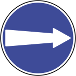

اتجاه إلزامي
تطلب منك اتباع الاتجاه الموضح بدلاً من اختيار اتجاه مخالف عند النقطة المحددة.
- راقب السهم قبل المفترق
- اختر المسار المناسب مبكراً
- لا تغير المسار بصورة مفاجئة
درس الفئة الثالثة
تحدد هذه الإشارات الاتجاه أو السلوك الواجب اتباعه. اقرأ السهم مبكراً، واختر المسار قبل أن تصل إلى التقاطع.

تطلب منك اتباع الاتجاه الموضح بدلاً من اختيار اتجاه مخالف عند النقطة المحددة.

نموذج آخر من فئة الاتجاهات الإلزامية؛ اتبع الرمز كما يظهر على الطريق.

تؤكد إشارات الإلزام أن السلوك المعروض ليس اقتراحاً بل توجيه واجب الاتباع.